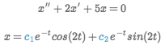
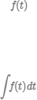
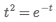
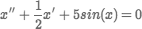
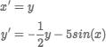
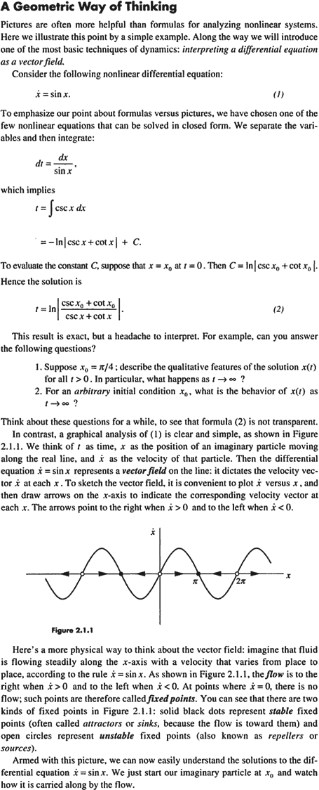

The power to understand and predict the quantities of the world should not be restricted to those with a freakish knack for manipulating abstract symbols.
When most people speak of Math, what they have in mind is more its mechanism than its essence. This "Math" consists of assigning meaning to a set of symbols, blindly shuffling around these symbols according to arcane rules, and then interpreting a meaning from the shuffled result. The process is not unlike casting lots.
This mechanism of math evolved for a reason: it was the most efficient means of modeling quantitative systems given the constraints of pencil and paper. Unfortunately, most people are not comfortable with bundling up meaning into abstract symbols and making them dance. Thus, the power of math beyond arithmetic is generally reserved for a clergy of scientists and engineers (many of whom struggle with symbolic abstractions more than they'll actually admit).
We are no longer constrained by pencil and paper. The symbolic shuffle should no longer be taken for granted as the fundamental mechanism for understanding quantity and change. Math needs a new interface.
Kill Math is my umbrella project for techniques that enable people to model and solve meaningful problems of quantity using concrete representations and intuition-guided exploration. In the long term, I hope to develop a widely-usable, insight-generating alternative to symbolic math.
Someday there will be an introductory essay on this page, and it will move you to tears. That essay is not yet written -- it will take a lot more thinking, and a lot of examples, before I understand what I'm trying to do well enough.
Here's what I have for you so far:
My plan is to collect a number of meaningful problems across different application areas and areas of mathematics, and for each one, design a means of solving it that is line with the philosophy here, and compare the benefits of this solution to the benefits of a conventional solution. The techniques and design patterns that emerge during this process will, hopefully, inform a more general framework in the long term.
As always, if you're playing with ideas along similar lines, I'd love to see what you've come up with.
Some additional thoughts were published in this Fast Company article.
The ability to understand and predict the quantities of the world is a source of great power. Currently, that power is restricted to the tiny subset of people comfortable with manipulating abstract symbols.
By comparison, consider literacy. The ability to receive thoughts from a person who is not at the same place or time is a similarly great power. The dramatic social consequences of the rise of literacy are well known.
Linguistic literacy has enjoyed much more popular success than mathematical literacy. Almost all "educated" people can read; most can write at some level of competence. But most educated people have no useful mathematical skill beyond arithmetic.
Writing and math are both symbol-based systems. But I speculate that written language is less artificial because its symbols map directly to words or phonemes, for which humans are hard-wired. I would guess that reading ties into the same mental machinery as hearing speech or seeing sign language.
I don't believe we have the same innate ability for processing mathematical symbols.* Instead, we tend to reply on implicit physical metaphors, both for the mechanics of symbol manipulation (e.g., "moving" a term to the other side of the equation, "canceling out" two terms, etc.) and for the semantic interpretation of the symbols (e.g., exponential "blow-up", or the "smallness" of a neglibible term). To a certain extent, a person's mathematical skill is tied to their ability to "feel" the symbols through these physical metaphors, and thereby make the abstract more concrete.
I believe that both of these forms of mental contortion are artifacts of pencil-and-paper technology. A person should not be manually shuffling symbols. That should be done, at best, entirely by software, and at least, by interactively guiding the software, like playing a sliding puzzle game. And, more contentiously, I believe that a person should not have to imagine the interpretation of abstract symbols. Instead, dynamic graphs, diagrams, visual models, and visual effects should provide visceral representations. Relationships between values, exponential blow-ups and negligible terms, should be plainly seen, not imagined.
Humans are built for language -- we're symbol-processing machines -- so I can't say "symbols bad". But I feel that there are things that we need to see or experience in order to truly understand. And there are things that are easy to draw or build, but impossible to describe (without years of practice in arcane specialized languages).
I think that quantity and measure fall into that category. Reading "1m" and "1mm", versus actually observing those two measures -- one is just numbers on a page, the other hits you viscerally. Do you think most people understood, really felt, the difference between a $1B and a $1T bailout? Three orders of magnitude hidden inside a symbol.
The point is that you need that visceral sense, that gut feel, to reason about a problem by intuition. Good circuit designers can "feel" how a circuit behaves. They look at a schematic and in their mind's eye, they see the voltage going down over here and pushing the voltage up over there, as if they were looking at a see-saw or water pump. It requires years of practice to develop this sense, this ability to look at symbols (in some domain) and feel what they represent.
Likewise, people used to think that reading and making sense of huge tables of numbers was an essential skill for working with data. But then William Playfair came along and invented line graphs, and suddenly everyone could feel data through their eyes. Their plain old monkey-eyes!
Complex numbers provide a similar example. Being able to work with complex numbers (as abstract values) is seen as an essential skill in many scientific fields. Then David Hestenes came along and said, "Hey, you know all your complex numbers and quaternions and Pauli matrices and other abstract funny stuff? If you were working in the right Clifford algebra, all of that would have a concrete geometric interpretation, and you could see it and feel it and taste it." Taste it with your monkey-mouth! Nobody actually believed him, but I do, and I love it.
It's the responsibility of our tools to adapt inaccessible things to our human limitations, to translate into forms we can feel. Microscopes adapt tiny things so they can be seen with our plain old eyes. Tweezers adapt tiny things so they can be manipulated with our plain old fingers. Calculators adapt huge numbers so they can be manipulated with our plain old brain. And I'm imagining a tool that adapts complex situations so they can be seen, experienced, and reasoned about with our plain old brain.
In The Children's Machine, Papert describes "kitchen math". A certain recipe serves 3, but the cook is only cooking for 2, so she needs to 2/3 all of the ingredients. The recipe calls for 3/4 cup of flour. The cook measures out 3/4 cup of flour, spreads it into a circle on the counter, takes a 1/3 piece out of the circle and puts it back into the bag. That's 2/3 of 3/4.
Some people would be horrified that this person can't multiply fractions, but I find the solution delightful. It's concrete, visual, tangible, direct. As opposed to the conventional approach of "canceling out the 3 on the top and bottom", which has no physical meaning whatsoever in this case.
I want to create an environment for turbo-charged kitchen math.
This project is not an attack on practicing math for its own sake. I have no problem with mathematics for recreation, or as an art form. All my life I've studied math out of personal interest; I play with math all the time. I resonate deeply with Lockhart's lament, and I'm amused by the work of Vi Hart, Mike Keith, and so on. There's beauty in patterns and rules; there's challenge in discovering it; that's all fine. My problem is when mindless tradition and lack of imagination compel us to use this art form, with all of its archaic restrictions, as a practical tool.
Consider martial arts, another art form that evolved out of immediately practical needs. Like math, people might practice martial arts for exercise (physical or mental), for the challenge and reward of mastering a skill, for its elegance and beauty, or as a social activity. Unlike math, we recognize that the martial arts are no longer suitable for their original practical purpose, now that technological progress has yielded more wonderously effective ways of smashing people.
(Also unlike math, we don't force-feed twelve years of lessons to every child on the planet, and those who are unskilled at the art aren't made to feel ashamed and vaguely inferior.)
When I was in high school, I would go down to the local college a few times a week to learn about differential equations. One day, after the instructor solved a second-order equation, say:

he threw out an offhand question: "Why do you think the solution has two arbitrary constants?"
I was confused by the question. It does because it does, I thought. I could see how the solution would have two degrees of freedom, that made sense to me, but it never occurred to me that there was some deeper cause.
The instructor continued, "Because you're integrating twice." And then moved on to some other subject while my young brain twisted into a knot.
I had never considered solving a differential equation to be integration. It didn't feel like integration. I knew what integration felt like -- it was adding things up, a little tank filling up with water:

And I knew what an equation felt like -- it was a balancing act, a little scale coming to rest:

I went on to college, and grad school, and an engineering career, and I must have solved, what, hundreds of differential equations? Thousands? Obviously I understood the formal relationship between differential equations and integration. But I don't know that I ever felt it.
Then, one day, I was reading (for fun) Strogatz's phenomenal book, Nonlinear Dynamics and Chaos. And he asked, how do you solve this differential equation:

And he said, well, you don't. You can't. It's nonlinear. Our symbol-pushing tricks don't work here. But what you can do is decompose it into a system of first-order equations:

and then plot trajectories in phase space, and get a feel for how the system behaves:
And there it was. There was the integration. At each point, the little cursor was nudged horizontally by one differential, and nudged vertically by the other differential, and thereby integrated its way around phase space like a little LOGO turtle.
Why did I spend my entire career working in a medium where I couldn't see what I was integrating? It seemed to me that analyzing a differential equation without exploring it in phase space was like analyzing a piece of sheet music without actually hearing it.
I thought about my instructor's question from years ago: "Why does the solution have two arbitrary constants?" And it was immediately obvious: you have to choose a starting point for the trajectory. The two constants correspond to the x and y where you drop your turtle and start integrating. I had solved "initial value problems" for years. But I had never been able to, literally, point my finger at the initial value.
When these notes were first published, I received a lot of enthusiastic responses. However, the majority of respondents seemed to think I wanted to reform math education. Even though education was mentioned nowhere, except for a brief tangential section which said the project wasn't about education.
I found this puzzling. If I were suggesting a new interface for driving a car (say, if I claimed the steering wheel was outdated, and should be replaced with a Wiimote), nobody would think I was talking about driver education. Nobody would even mention education. They would just talk about whether that was a good way to drive a car.
But call for a new interface for understanding quantity, and everyone starts talking about classrooms and curricula.
This is especially odd considering that best tool available today for exploring real-life questions of quantity and change is the spreadsheet. And if I were to demand a new interface for the spreadsheet, again, nobody would bring up education.
(This recasting into the educational domain also happened to Interactive Exploration of a Dynamical System. I'm sure I could have done a better job of framing it: "This is a prototype of a tool for engineers and scientists to model and explore the systems that they are engineering and sciencing." But I thought the framing was closer to that than, "This is a pedagogical visualization of the Lotka-Volterra equation." The majority of respondents wanted canned visualizations of specific problems, like Wolfram Demonstrations. I kind of felt as if I had demonstrated a fancy new non-stick frying pan, and everyone came up afterwards asking for some of those delicious scrambled eggs.)
If I had to guess why "math reform" is misinterpreted as "math education reform", I would speculate that school is the only contact that most people have had with math. Like school-physics or school-chemistry, math is seen as a subject that is taught, not a tool that is used. People don't actually use math-beyond-arithmetic in their lives, just like they don't use the inverse-square law or the periodic table.
Which is the premise of this project, of course -- people don't use math. But everyone seems to believe, if only math were taught better, they would use it! And my position (and the entire point of the project) is: No. Teach the current mathematical notation and methods any way you want -- they will still be unusable. They are unusable in the same way that any bad user interface is unusable -- they don't show the user what he needs to see, they don't match how the user wants to think, they don't show the user what actions he can take.
They are unusable in the same way that the UNIX command line is unusable for the vast majority of people. There have been many proposals for how the general public can make more powerful use of computers, but nobody is suggesting we should teach everyone to use the command line. The good proposals are the opposite of that -- design better interfaces, more accessible applications, higher-level abstractions. Represent things visually and tangibly.
And so it should be with math. Mathematics, as currently practiced, is a command line. We need a better interface.
Oliver Steele: email
Anything that remains abstract (in the sense of not concrete) is hard to think about... I think that mathematicians are those who succeed in figuring out how to think concretely about things that are abstract, so that they aren't abstract anymore. And I believe that mathematical thinking encompasses the skill of learning to think of an abstract thing concretely, often using multiple representations – this is part of how to think about more things as "things". So rather than avoiding abstraction, I think it's important to absorb it, and concretize the abstract... One way to concretize something abstract might be to show an instance of it alongside something that is already concrete.
David Hestenes and Garret Sobczyk: Clifford Algebra to Geometric Calculus: A Unified Language for Mathematics
Klein's seminal analysis of the structure and history of mathematics brings to light two major processes by which mathematics grows and becomes organized... The one emphasizes algebraic structure while the other emphasizes geometric interpretation. Klein's analysis shows one process alternately dominating the other in the historical development of mathematics. But there is no necessary reason that the two processes should operate in mutual exclusion. Indeed, each process is undoubtedly grounded in one the two great capacities of the human mind: the capacity for language and the capacity for spatial perception. From the psychological point of view, then, the fusion of algebra with geometry is so fundamental that one could well say, 'Geometry without algebra is dumb! Algebra without geometry is blind!'
David Hestenes: Reforming the Mathematical Language of Physics
Mathematics is taken for granted in the physics curriculum -- a body of immutable truths to be assimilated and applied. The profound influence of mathematics on our conceptions of the physical world is never analyzed. The possibility that mathematical tools used today were invented to solve problems in the past and might not be well suited for current problems is never considered...
One does not have to go very deeply into the history of physics to discover the profound influence of mathematical invention. Two famous examples will suffice to make the point: The invention of analytic geometry and calculus was essential to Newton’s creation of classical mechanics. The invention of tensor analysis was essential to Einstein’s creation of the General Theory of Relativity...
The point I wish to make by citing these two examples is that without essential mathematical concepts the two theories would have been literally inconceivable. The mathematical modeling tools we employ at once extend and limit our ability to conceive the world. Limitations of mathematics are evident in the fact that the analytic geometry that provides the foundation for classical mechanics is insufficient for General Relativity. This should alert one to the possibility of other conceptual limits in the mathematics used by physicists.
Alan Kay: Doing With Images Makes Symbols
Jacques Hadamard, the famous French mathematician, in the late stages of his life, decided to poll his 99 buddies, who made up together the 100 great mathematicians and physicists on the earth, and he asked them, "How do you do your thing?" They were all personal friends of his, so they wrote back depositions. Only a few, out of the hundred, claimed to use mathematical symbology at all. Quite a surprise. All of them said they did it mostly in imagery or figurative terms. An amazing 30% or so, including Einstein, were down here in the mudpies [doing]. Einstein's deposition said, "I have sensations of a kinesthetic or muscular type." Einstein could feel the abstract spaces he was dealing with, in the muscles of his arms and his fingers...
The sad part of [the doing -> images -> symbols] diagram is that every child in the United States is taught math and physics through this [symbolic] channel. The channel that almost no adult creative mathematician or physicist uses to do it... They use this channel to communicate, but not to do their thing. Much of our education is founded on those principles, that just because we can talk about something, there is a naive belief that we can teach through talking and listening.
William Thurston: On proof and progress in mathematics
When a significant theorem is proved, it often (but not always) happens that the solution can be communicated in a matter of minutes from one person to another within the subfield. The same proof would be communicated and generally understood in an hour talk to members of the subfield. It would be the subject of a 15- or 20-page paper, which could be read and understood in a few hours or perhaps days by members of the subfield.
Why is there such a big expansion from the informal discussion to the talk to the paper? One-on-one, people use wide channels of communication that go far beyond formal mathematical language. They use gestures, they draw pictures and diagrams, they make sound effects and use body language. Communication is more likely to be two-way, so that people can concentrate on what needs the most attention. With these channels of communication, they are in a much better position to convey what's going on, not just in their logical and linguistic facilities, but in their other mental facilities as well.
In talks, people are more inhibited and more formal. Mathematical audiences are often not very good at asking the questions that are on most people's minds, and speakers often have an unrealistic preset outline that inhibits them from addressing questions even when they are asked.
In papers, people are still more formal. Writers translate their ideas into symbols and logic, and readers try to translate back.
Richard Hamming: The Unreasonable Effectiveness of Mathematics
The Postulates of Mathematics Were Not on the Stone Tablets that Moses Brought Down from Mt. Sinai. It is necessary to emphasize this. We begin with a vague concept in our minds, then we create various sets of postulates, and gradually we settle down to one particular set. In the rigorous postulational approach, the original concept is now replaced by what the postulates define. This makes further evolution of the concept rather difficult and as a result tends to slow down the evolution of mathematics. It is not that the postulation approach is wrong, only that its arbitrariness should be clearly recognized, and we should be prepared to change postulates when the need becomes apparent.
Richard Hamming: The Art of Doing Science and Engineering
When digital filters first arose they were viewed merely as a variant of the classical analog filters; people did not see them as essentially new and different. This is exactly the same mistake which was made endlessly by people in the early days of computers. I was told repeatedly, until I was sick of hearing it, computers were nothing more than large, fast desk calculators. "Anything you can do by a machine you can do by hand.", so they said. This simply ignores the speed, accuracy, reliability, and lower costs of the machines vs. humans. Typically a single order of magnitude change (a factor of 10) produces fundamentally new effects, and computers are many, many times faster than hand computations. Those who claimed there was no essential difference never made any signficicant contributions to the development of computers...
This is a common, endlessly made, mistake; people always want to think that something new is just like the past -- they like to be comfortable in their minds as well as their bodies -- and hence they prevent themselves from making any significant contribution to the new field being created under their noses.
Steven Strogatz: Nonlinear Dynamics and Chaos
